Le marché du matin
Le marché s’ouvre avec le soleil. SOYA avance légèrement devant ; CILLO observe ; SIDAAT tient son panier.
LMI Éditions · préproduction album
Douze doubles pages structurées pour préparer l’illustration définitive ; les SVG ci-dessous ne sont pas des artworks.
Le chemin de fer 32 pages est exploitable comme structure éditoriale. Les douze compositions sont des layouts procéduraux : elles doivent être remplacées par des illustrations finales en aquarelle numérique réaliste, puis contrôlées visuellement avant toute recette humaine.

Le marché s’ouvre avec le soleil. SOYA avance légèrement devant ; CILLO observe ; SIDAAT tient son panier.
Une paire décorée attire SOYA. Les motifs semblent immobiles mais son regard croit les voir glisser.
SOYA essaie les sandales. Trois pas plus loin, une vibration traverse ses semelles.
CILLO observe : « Attends... ça recommence seulement quand tu avances. » SOYA comprend que le signe répond à son mouvement.
De petits boutons apparaissent. SIDAAT demande : « Soya, tes jambes ont peur ? »
CILLO lance l’enquête : « On doit demander qui les a faites. » Le trio retourne au marché.
Le vendeur prononce « Un boa. » Le marché disparaît derrière le visage de SOYA ; une ombre calme passe sans menace.
Dans une maison calme, NÉNÉ ADAMA explique que certains animaux protègent une lignée et avertissent lorsqu’un lien est rompu.
La matière des sandales a été utilisée sans respect. Le boa n’est pas une menace : il cherche à faire entendre une blessure.
SIDAAT demande : « Le boa aussi a eu mal ? » Le silence et la lumière deviennent la réponse principale.
SOYA retire les sandales. « C'est moi que le signe a arrêtée. Alors c'est moi qui dois commencer. » Elle accomplit elle-même le geste de réparation.
La vibration cesse. Le trio repart vers le marché ; une trace d’écailles apparaît un instant puis disparaît.